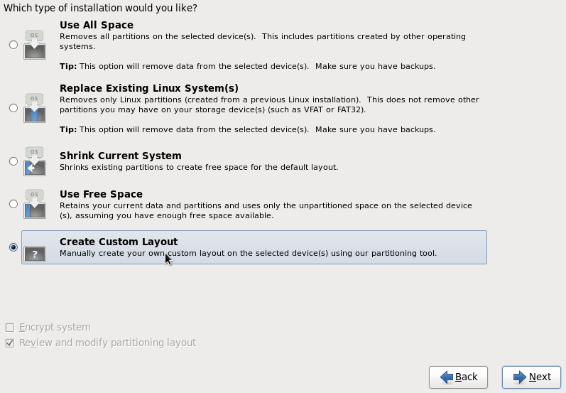
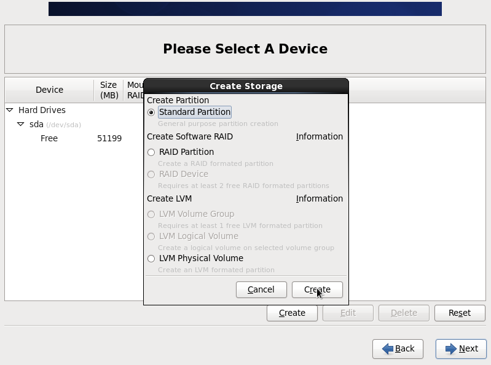
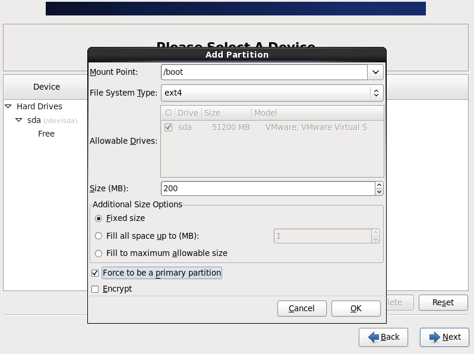
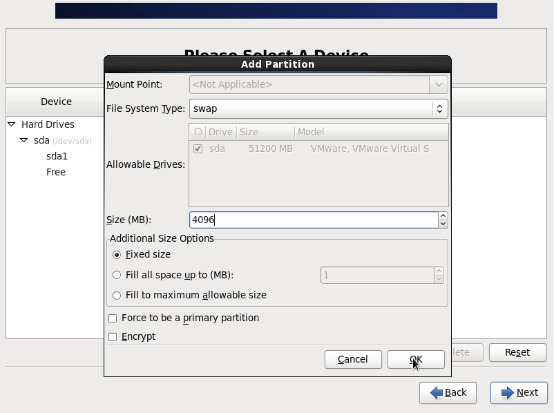
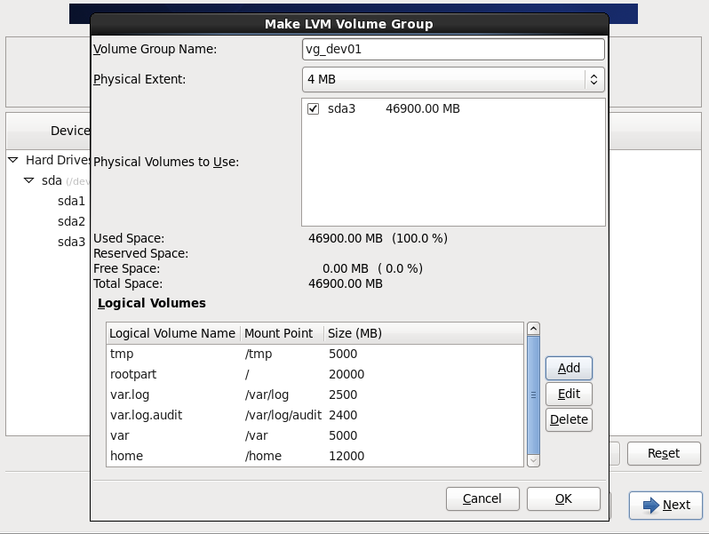
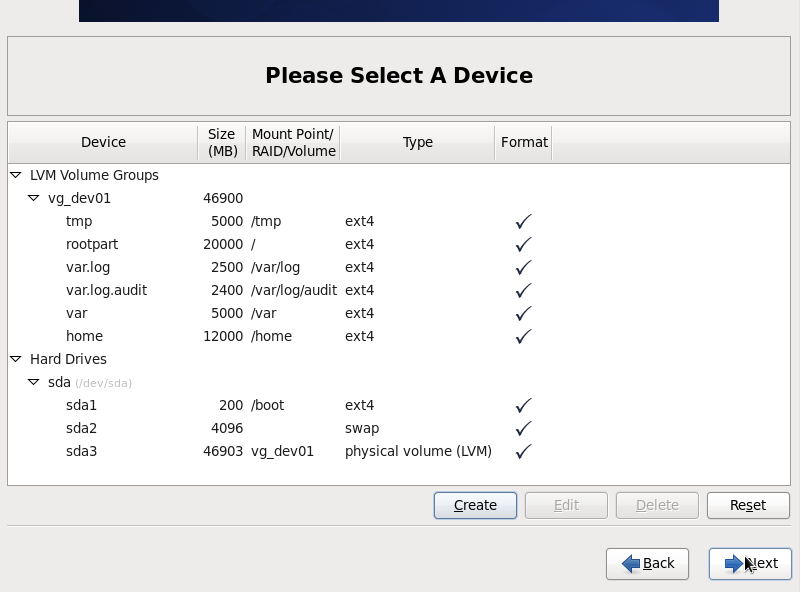
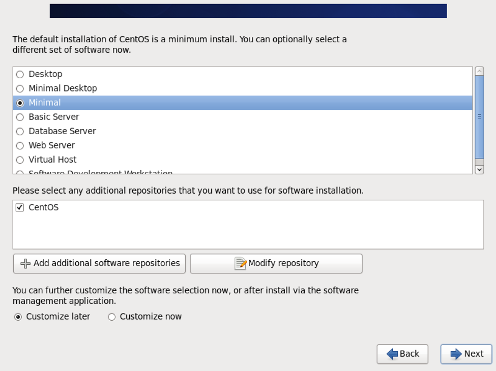
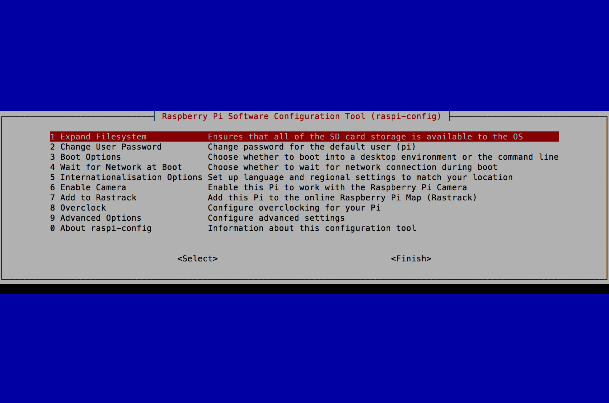

goSecure Documentation Current version 0.9.8
Introduction
goSecure is an easy to use and portable Virtual Private Network (VPN) system.
The system consists of a single server and one or many clients.
strongSwan is used to establish a Suite B IPsec tunnel with pre-shared keys between the server and client(s). The core crypt implementation has been verified by NSA’s Cryptol tool.
The server component is a multi-homed laptop/server that runs strongSwan using the NSA Commercial Solutions for Classified (CSfC) guidelines for protecting classified data. It is built upon a minimal and hardened Linux instance per DISA Security Technical Implementation Guides (STIGs).
The client component is a Raspberry Pi 3 that runs strongSwan using the NSA CSFC guidelines for protecting classified data and it utilizes its hardware Random Number Generator (RNG). It is built upon a minimal and hardened Linux instance per DISA STIGs.
The client currently supports 3 modes of operation:
- Ethernet (eth0) LAN - Wifi (wlan0) WAN
- Ethernet (eth1) LAN - Ethernet (eth0) WAN
- Wifi LAN (wlan0) - Ethernet (eth0) WAN
Documentation
Network flow diagram:

Client - User Instructions:
Note: If you are using the goSecure Client for the first time, please follow the Setup section below. Also follow the Setup section if your Wifi network or goSecure Server information has changed.
-
Setup:
- Plug in the Ethernet cable from the goSecure Client to the device (i.e. your laptop).
- Plug in the USB cable to the goSecure Client to the device (i.e. your laptop).
- Wait 60 seconds.
- Open a web browser and navigate to "https://setup.gosecure"
- Follow the instructions on the web page that appears. The default login username is "admin" and the password is "gosecure". You will be prompted to change them once you login.
- You can access your enterprise resources now.
- Plug in the Ethernet cable from the goSecure Client to the device (i.e. your laptop).
- Plug in the USB cable to the goSecure Client to the device (i.e. your laptop).
- Wait 60 seconds.
- You can access your enterprise resources now.
Normal use:
Build Components
Server
Note: The server component build instructions are simply an example that can be used by affaliates that desire a complete solution, but the client component can interoperate with any VPN server that can be configured using the NSA CSFC guidelines.- Prerequisites
- Hardware
- A laptop, desktop, or server with 2 network interfaces. In this example we will be using a laptop and an external USB to Ethernet adapter (SIIG JU-NE0211-S1 USB 3.0 to Gigabit Ethernet).
- Software
- CentOS 6.7 64-bit (minimal): http://isoredirect.centos.org/centos/6.7/isos/x86_64/
- Install OS
- Install CentOS 6.7 64-bit (minimal)
- When you reach the prompt stating “Which type of installation would you like?”, select “Create Custom Layout”.
- Create a “Standard Partition” for the “/boot” partition of size “200” (MB), and check the box “Force to be a primary partition”.
- Create a “Standard Partition” for the “swap” partition. Select “swap” as the “File System Type”.
- Create a “LVM Physical Volume”. Select “Fill to maximum allowable size”.
- Create a “LVM Volume Group”. Create all the logical volumes at their specified mount points (depicted above in the Disk partition overview).
- Click “Format” when prompted with the warning.
- Click “Write changes to disk” when prompted.
- Select “Minimal” and select “Customize later”.
- Configure OS
- vi /etc/sysctl.conf
- change "net.ipv4.ip_forward" from "0" to "1" in the file.
- sysctl -p
- Configure Networking
- vi /etc/sysconfig/network-scripts/ifcfg-eth0
- Change "ONBOOT=no" to "ONBOOT=yes" in the file.
- service network restart
- yum update -y
- reboot
- Ensure the SIIG USB-to-Ethernet adapter is plugged in.
- yum groupinstall -y "Development Tools"
- yum install wget unzip
- wget http://www.siig.com/media/files/drivers/0010/02-1634d-linux-v1.13.0.zip
- unzip 02-1634d-linux-v1.13.0.zip
- cd Linux
- tar -xf AX88179_178A_LINUX_DRIVER_v1.13.0_SOURCE.tar
- cd AX88179_178A_LINUX_DRIVER_v1.13.0_SOURCE
- make
- make install
- Unplug the SIIG USB-to-Ethernet adapter and plug it back in.
- cp /etc/sysconfig/network-scripts/ifcfg-eth0 /etc/sysconfig/network-scripts/ifcfg-eth1
- vi /etc/sysconfig/network-scripts/ifcfg-eth1
- Change "DEVICE=eth0" to "DEVICE=eth1"
- Change the "HWADDR=<eth0 MAC address>" to "HWADDR=<eth1 MAC address>"
- Delete the "UUID" line.
- Change "BOOTPROTO=dhcp" to "BOOTPROTO=static" in the file.
- Add "IPADDR=172.16.166.1" and "NETMASK=255.255.255.0" to the bottom of the file.
- service network restart
- Configure Firewall
- vi /etc/sysconfig/iptables
- service iptables restart
- Install strongSwan
- yum install -y openssl-devel pam-devel
- wget https://download.strongswan.org/strongswan-5.3.5.tar.gz
- tar -xvzf strongswan-5.3.5.tar.gz
- cd ./strongswan-5.3.5/
- ./configure --prefix=/usr --sysconfdir=/etc --enable-gcm --enable-xauth-pam --enable-kernel-libipsec --enable-openssl --with-fips-mode=2 --disable-ikev2 --disable-gmp --disable-pkcs1 --disable-pkcs7 --disable-pkcs8 --disable-pkcs12 --disable-pki --disable-x509 Note: This command will run for a long time.
- make Note: This command will run for a long time.
- make install Note: This command will run for a long time.
- Configure strongSwan
- vi /etc/strongswan.conf
- vi /etc/ipsec.conf
- vi /etc/ipsec.secrets Note: replace <unique_id_of_client> with the unique ID and <password_for_client> with the password for the goSecure VPN client.
- service network restart
- Start strongSwan
- ipsec start
- echo "ipsec start" >> /etc/rc.d/rc.local
-
Disk partition overview:
Partitioning:
Logical Volume
/home approx. 40% of hard drive size
/tmp approx. 5% of hard drive size
/var approx. 5% of hard drive size
/var/log approx. 10% of hard drive size
/var/log/audit approx. 10% of hard drive size
/ approx. 30% of hard drive size
Physical Volume
/boot 200MB
swap 2x amount of RAM






-
Package Selection:

Note:
-
Configure external (Internet) facing interface and update the OS:
Install eth1 (SIIG) driver:
Configure internal (Enterprise) facing interface:
Note: Use the same format for the MAC address, i.e. "00:00:BA:XX:XX:XX". The MAC address for eth1 can be found on the back of the SIIG USB-to-Ethernet adapter.
# Firewall configuration written by system-config-firewall # Manual customization of this file is not recommended. *filter :INPUT ACCEPT [0:0] :FORWARD ACCEPT [0:0] :OUTPUT ACCEPT [0:0] -A INPUT -m state --state ESTABLISHED,RELATED -j ACCEPT #-A INPUT -p icmp -j ACCEPT -A INPUT -i lo -j ACCEPT #-A INPUT -m state --state NEW -m tcp -p tcp --dport 22 -j ACCEPT -A INPUT -m udp -p udp --dport 500 -j ACCEPT -A INPUT -m udp -p udp --dport 4500 -j ACCEPT -A FORWARD -i ipsec0 -o eth0 -j ACCEPT -A FORWARD -i eth0 -o ipsec0 -j ACCEPT -A FORWARD -i ipsec0 -o eth1 -j ACCEPT -A FORWARD -i eth1 -o ipsec0 -j ACCEPT -A INPUT -j REJECT --reject-with icmp-host-prohibited -A FORWARD -j REJECT --reject-with icmp-host-prohibited COMMIT *nat :PREROUTING ACCEPT [0:0] :POSTROUTING ACCEPT [0:0] :OUTPUT ACCEPT [0:0] -A POSTROUTING -o eth0 -j MASQUERADE -A POSTROUTING -o eth1 -j MASQUERADE COMMIT
charon {
interfaces_use = eth0
load_modular = yes
plugins {
include strongswan.d/charon/*.conf
}
}
config setup
conn %default
ikelifetime=60m
keylife=20m
rekeymargin=3m
keyingtries=1
keyexchange=ikev1
modeconfig=push
left=%defaultroute
leftsubnet=0.0.0.0/0
leftid=@vpn.ix.mil
leftfirewall=yes
authby=secret
ike=aes256-sha384-ecp384!
esp=aes256gcm128!
conn rw-client1
right=%any
rightid=<unique_id_of_client>
rightsourceip=172.16.176.100/27
auto=start
#To add additional clients:
#conn rw-client1 #increment the last number by 1 for each additional client
# right=%any #stays the same for all clients
# rightid=<unique_id_of_client> #set a unique id for each client
# rightsourceip=172.16.176.100/27 #increment the last octet by 2. i.e. 102 for the next client, then 104
# auto=start #stays the same for all clients
<unique_id_of_client> : PSK <password_for_client>
Client
Note: The following instructions are to build the client in mode 1 (see introduction section for mode definitions).
- Prerequisites
- Hardware
- Raspberry Pi 3 Model B
- 2GB (minimum size) SD Card
- Software
- Raspbian Jessie Lite Image: https://downloads.raspberrypi.org/raspbian_lite_latest
- Install OS
- Install Raspbian Jessie Lite (kernel 4.1) onto SD Card using the instructions under the "WRITING AN IMAGE TO THE SD CARD" section from here.
- Turn on Raspberry Pi with SD Card installed.
- Login with default credentials (username: "pi" and password: "raspberry").
- Configure OS
- sudo raspi-config
- Select "1 Expand Filesystem" and press the "Enter" key. 
- A new prompt stating "Root partition has been resized." will appear, press the "Enter" key to continue.
- Select "2 Change User Password" and press the "Enter" key.
- Press the "Enter" key when you receive a message stating "You will now be asked to enter a password for the pi user"
- A new command line prompt stating "Enter new UNIX password:" will appear on the bottom of the screen, type in your new password and press the "Enter" key.
- A new command line prompt stating "Retype new UNIX password:" will appear on the bottom of the screen, type in your new password again and press the "Enter" key.
- A new prompt stating "Password changed successfully" will appear, press the "Enter" key to continue.


- Select "5 Internationalisation Options" and press the "Enter" key.
- Select "I2 Change Timezone" and press the "Enter" key.
- Select "America" or the Country you reside in and press the "Enter" key.
- Select "New_York" or the location you reside in and press the "Enter" key.
- Select "5 Internationalisation Options" and press the "Enter" key.
- Select "I3 Change Keyboard Layout" and press the "Enter" key.
- Select "Generic 105-key (Intl) PC" and press the "Enter" key.
- Select "Other" and press the "Enter" key.
- Select "English (US)" and press the "Enter" key.
- Select "English (US)" and press the "Enter" key.
- Select "Right Alt (AltGr)" and press the "Enter" key.
- Select "No compose key" and press the "Enter" key.
- Select "5 Internationalisation Options" and press the "Enter" key.
- Select "I4 Change Wi-fi Country" and press the "Enter" key.
- Select "US United States" or the Country you reside in and press the "Enter" key.
- A new prompt stating "Wi-fi sountry set to US" will appear, press the "Enter" key to continue.
- Press the "Tab" key 2 times to select "
" and press the "Enter" key. - A new prompt stating "Would you like to reboot now?" will appear, press the "Enter" key to continue.
- After reboot, on login prompt, login.
- Configure Networking
- sudo sh -c "echo 1 > /proc/sys/net/ipv4/ip_forward"
- sudo vi /etc/sysctl.conf
- uncomment the line "net.ipv4.ip_forward=1" in the file.
- sudo vi /etc/network/interfaces
- sudo vi /etc/wpa_supplicant/wpa_supplicant.conf
- sudo service networking restart
- Configure Firewall
- sudo mkdir /etc/iptables/
- sudo vi /etc/iptables/rules.v4
- sudo vi /etc/network/if-pre-up.d/firewall
- sudo chmod 550 /etc/network/if-pre-up.d/firewall
- Enable hardware random
- sudo modprobe bcm2708-rng
- sudo sh -c "echo bcm2708-rng >> /etc/modules"
- Update OS and Raspberry Pi
- sudo apt-get update -y
- sudo apt-get upgrade -y
- sudo apt-get dist-upgrade -y
- sudo apt-get install rpi-update
- sudo rpi-update
- sudo reboot
- Install strongSwan
- cd /tmp/
- sudo apt-get install -y libssl-dev libpam-dev
- wget https://download.strongswan.org/strongswan-5.3.5.tar.gz
- tar -xvzf strongswan-5.3.5.tar.gz
- cd strongswan-5.3.5
- ./configure --prefix=/usr --sysconfdir=/etc --enable-gcm --with-random-device=/dev/hwrng --enable-xauth-pam --enable-kernel-libipsec --enable-openssl --with-fips-mode=2 --disable-ikev2 --disable-gmp --disable-pkcs1 --disable-pkcs7 --disable-pkcs8 --disable-pkcs12 --disable-pki --disable-x509 Note: This command will run for a long time.
- make Note: This command will run for a long time.
- sudo make install Note: This command will run for a long time.
- sudo vi /etc/strongswan.d/charon/openssl.conf
- uncomment "fips_mode = 0" in the file.
- Configure strongSwan
- sudo vi /etc/strongswan.conf
- sudo vi /etc/ipsec.conf
- sudo vi /etc/ipsec.secrets
- sudo service networking restart
- Start strongSwan
- sudo ipsec start
- sudo sh -c "echo 'sudo ipsec start' >> /etc/network/if-pre-up.d/firewall"
- sudo ip route add table 220 192.168.50.0/24 dev eth0
- sudo sed -i '$ d' /etc/rc.local
- sudo sh -c "echo 'ip route add table 220 192.168.50.0/24 dev eth0' >> /etc/rc.local"
- sudo sh -c "echo 'exit 0' >> /etc/rc.local"
- Install DHCP and DNS Server
- sudo apt-get install dnsmasq -y
- Configure DHCP and DNS Server
- sudo vi /etc/dnsmasq.conf
- sudo vi /etc/hosts
- sudo service dnsmasq start
- sudo update-rc.d dnsmasq enable
- Install User Interface
- sudo apt-get install python-pip -y
- sudo pip install Flask Flask-WTF Flask-Login
- cd ~
- wget https://github.com/iadgov/goSecure/archive/master.zip
- unzip master.zip
- rm master.zip
- mv goSecure-master goSecure_Web_GUI
- find goSecure_Web_GUI -type d -exec chmod 550 {} \;
- find goSecure_Web_GUI -type f -exec chmod 440 {} \;
- sudo chmod 660 ./goSecure_Web_GUI/users_db.p
- sudo vi /lib/systemd/system/gosecure.service
- sudo chmod 644 /lib/systemd/system/gosecure.service
- sudo systemctl daemon-reload
- sudo systemctl enable gosecure.service
- sudo chmod 550 /home/pi/goSecure_Web_GUI/gosecure_app.py
- sudo reboot
- Clean up
- sudo rm -rf /tmp/strongswan-5.3.5/
- sudo rm /tmp/strongswan-5.3.5.tar.gz
- sudo apt-get purge `sudo dpkg --get-selections | grep "\-dev" | sed s/install//` gcc-4\.[0-6].*
- sudo apt-get --yes autoremove
- sudo rm -rf /usr/share/doc/* /opt/vc/src/hello_pi/
- find /usr/share/locale/* -maxdepth 0 -type d |grep -v en |xargs sudo rm -rf
- find /usr/share/man/* -maxdepth 0 -type d |grep -Pv 'man\d' |xargs sudo rm -rf
- sudo find / -type f -name "*-old" |xargs sudo rm -rf
- sudo rm -rf /var/backups/* /var/lib/apt/lists/* ~/.bash_history
- find /var/log/ -type f |xargs sudo rm -rf
- sudo cp /dev/null /etc/resolv.conf
- sudo systemctl disable ssh
- sudo reboot


# interfaces(5) file used by ifup(8) and ifdown(8) # Please note that this file is written to be used with dhcpcd # For static IP, consult /etc/dhcpcd.conf and 'man dhcpcd.conf' # Include files from /etc/network/interfaces.d: source-directory /etc/network/interfaces.d auto lo iface lo inet loopback auto eth0 allow-hotplug eth0 iface eth0 inet static address 192.168.50.1 netmask 255.255.255.0 auto wlan0 allow-hotplug wlan0 iface wlan0 inet manual wpa-conf /etc/wpa_supplicant/wpa_supplicant.conf
ctrl_interface=DIR=/var/run/wpa_supplicant GROUP=netdev
update_config=1
network={
ssid=<YOUR_WIFI_SSID>
psk=<YOUR_WIFI_PASSWORD>
}
*filter :INPUT ACCEPT [0:0] :FORWARD ACCEPT [0:0] :OUTPUT ACCEPT [0:0] -A FORWARD -i ipsec0 -o eth0 -m state --state RELATED,ESTABLISHED -j ACCEPT -A FORWARD -i eth0 -o ipsec0 -j ACCEPT COMMIT *nat :PREROUTING ACCEPT [0:0] :INPUT ACCEPT [0:0] :OUTPUT ACCEPT [0:0] :POSTROUTING ACCEPT [0:0] -A POSTROUTING -o ipsec0 -j MASQUERADE COMMIT
#!/bin/sh sudo /sbin/iptables-restore < /etc/iptables/rules.v4
charon {
interfaces_use = wlan0 #the external/WAN interface
load_modular = yes
plugins {
include strongswan.d/charon/*.conf
}
}
config setup
conn %default
ikelifetime=60m
keylife=20m
rekeymargin=3m
keyingtries=1
keyexchange=ikev1
modeconfig=push
authby=secret
ike=aes256-sha384-ecp384!
esp=aes256gcm128!
conn work
left=%defaultroute #external IP address
leftsourceip=%config #external IP address
leftid=<unique_id_of_client> #unique id of client i.e. client1@ix.mil
leftfirewall=yes #automatically add firewall rules
right=<eth0_ip_of_server> #strongSwan server external IP or DNS name
rightsubnet=0.0.0.0/0 #route all traffic to the strongSwan server
rightid=@vpn.ix.mil #unique id of server
auto=start #start tunnel when strongSwan service starts
<unique_id_of_client> : PSK <password_for_client>
######## dns ######## # Never forward plain names (without a dot or domain part) domain-needed # Never forward addresses in the non-routed address spaces bogus-priv # dont read resolv.conf use the defined servers instead #no-resolv server=8.8.8.8 server=8.8.4.4 # increase dns cache form 512 to 4096 cache-size=4096 ######### dhcp ########## # Add local-only domains here, queries in these domains are answered # from /etc/hosts or DHCP only local=/home/ # Set this (and domain: see below) if you want to have a domain # automatically added to simple names in a hosts-file. expand-hosts # adds my localdomain to each dhcp host domain=gosecure # my private dhcp range + subnetmask + 14d lease time dhcp-range=192.168.50.101,192.168.50.200,255.255.255.0,14d # set route to my local network router dhcp-option=option:router,192.168.50.1 #windows 7 float fix dhcp-option=252,"\n" ###### logging ############ # own logfile log-facility=/var/log/dnsmasq.log log-async # log dhcp infos log-dhcp # debugging dns #log-queries
127.0.0.1 localhost ::1 localhost ip6-localhost ip6-loopback ff02::1 ip6-allnodes ff02::2 ip6-allrouters 127.0.1.1 raspberrypi 192.168.50.1 setup
[Unit] Description=goSecure Web GUI Service After=multi-user.target [Service] Type=idle ExecStart=/usr/bin/python /home/pi/goSecure_Web_GUI/gosecure_app.py [Install] WantedBy=multi-user.target
FAQ
What is goSecure?
goSecure is an easy to use and portable VPN system.
How do I add more clients to the system?
Refer to the comments in the configuration file created in #7 step 3 of the "Server" section in the "Build Components" heading. Also add a new line to the configuration file used in #7 step 4 of the "Server" section in the "Build Components" heading that contains the new <unique_id_of_client> and a new unique password.
API
Note: Add "--insecure" to the end of the curl command if your computer does not trust the goSecure client's self signed certificate.goSecure Client REST API examples using curl
| # | Action | curl command |
|---|---|---|
| 1 | Set VPN credentials | curl --user admin:gosecure -H "Content-Type: application/json" -X POST https://192.168.50.1/v1.0/vpn/credentials -d '{"vpn_server":"server1@ix.mil", "user_id":"client1@ix.mil","user_psk":"mysecretpsk"}' |
| 2 | Reset (clear) VPN credentials | curl --user admin:gosecure -H "Content-Type: application/json" -X DELETE https://192.168.50.1/v1.0/vpn/credentials |
| 3 | Start VPN service and establish connection | curl --user admin:gosecure -H "Content-Type: application/json" -X POST https://192.168.50.1/v1.0/vpn/actions -d '{"action":"start_vpn"}' |
| 4 | Stop VPN service and close connection | curl --user admin:gosecure -H "Content-Type: application/json" -X POST https://192.168.50.1/v1.0/vpn/actions -d '{"action":"stop_vpn"}' |
| 5 | Restart VPN service and establish connection | curl --user admin:gosecure -H "Content-Type: application/json" -X POST https://192.168.50.1/v1.0/vpn/actions -d '{"action":"restart_vpn"}' |
License
This work was prepared by an U.S. Government employee and, therefore, is excluded from copyright by Section 105 of the Copyright Act of 1976. Copyright and Related Rights in the Work worldwide are waived through the CC0 1.0 Universal license.
Disclaimer
Disclaimer of Warranty
This Work is provided "as is." Any express or implied warranties, including but not limited to, the implied warranties of merchantability and fitness for a particular purpose are disclaimed. In no event shall the United States Government be liable for any direct, indirect, incidental, special, exemplary or consequential damages (including, but not limited to, procurement of substitute goods or services, loss of use, data or profits, or business interruption) however caused and on any theory of liability, whether in contract, strict liability, or tort (including negligence or otherwise) arising in any way out of the use of this Guidance, even if advised of the possibility of such damage.
The User of this Work agrees to hold harmless and indemnify the United States Government, its agents and employees from every claim or liability (whether in tort or in contract), including attorneys' fees, court costs, and expenses, arising in direct consequence of Recipient's use of the item, including, but not limited to, claims or liabilities made for injury to or death of personnel of User or third parties, damage to or destruction of property of User or third parties, and infringement or other violations of intellectual property or technical data rights.
Nothing in this Work is intended to constitute an endorsement, explicit or implied, by the U.S. Government of any particular manufacturer's product or service.
Disclaimer of Endorsement
Reference herein to any specific commercial product, process, or service by trade name, trademark, manufacturer, or otherwise, in this Work does not constitute an endorsement, recommendation, or favoring by the United States Government and shall not be used for advertising or product endorsement purposes.